Início
A região
Cidades
Geografia
História
Turismo
Eventos
Pokédex de Hoenn
[usuário]
logout
Cidades 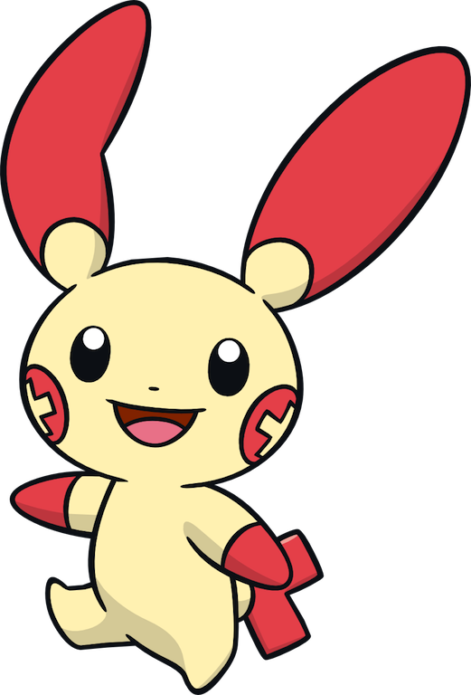
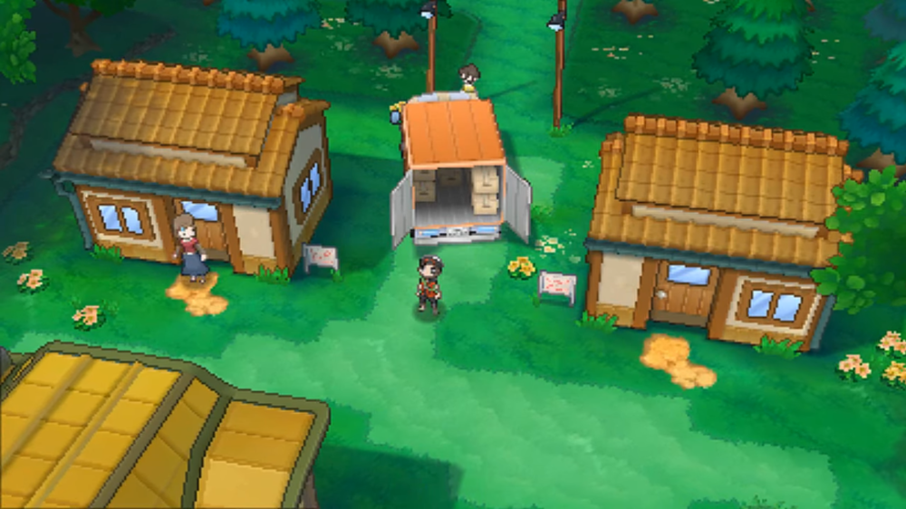
Littleroot
Town
Banhando-se em meio à natureza vibrante, esta cidade simples não é sombreada por nenhuma tonalidade
Local de interesse:
Laboratório
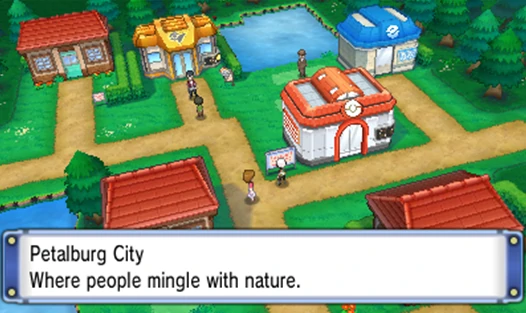
Petalburg
City
Um sopro de sal está sempre no ar nesta cidade, que é banhada pela costa do oceano
Local de interesse:
Casa do Wally
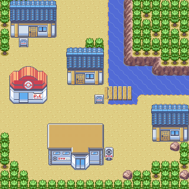
Dewford
Town
As novas tendências estão sempre na moda entre os habitantes desta pequena cidade insular
Local de interesse:
Ginásio de Dewford
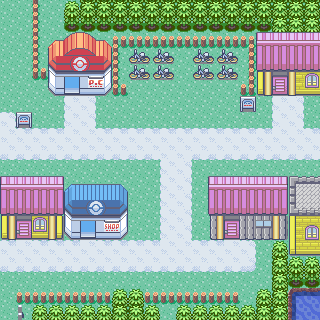
Mauville
City
Esta grande cidade está localizada no coração da região de Hoenn, no cruzamento de seu passado nostálgico e das novas tecnologias
Local de interesse:
Bicicletaria do Rydel
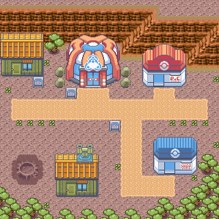
Fallarbor
Town
Cidade formada por estudiosos que se reúnem para pesquisar meteoritos
Local de interesse:
Tutor de Movimentos
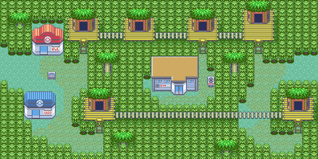
Fortree
City
As pessoas e os Pokémon desta cidade seguem os sinais da natureza para subir a cada manhã e terminar cada dia
Local de interesse:
Casas suspensas
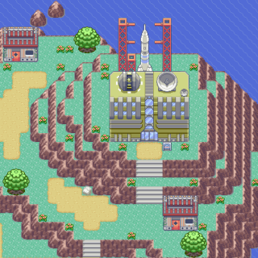
Mossdeep
City
A pesquisa está em andamento dia e noite nesta cidade, tudo na esperança de compreender os confins do espaço
Local de interesse:
Estação espacial
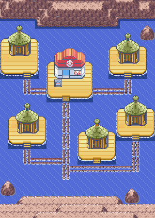
Pacifidlog
Town
Esta cidade surgiu pela primeira vez como um armazém flutuante usado por pessoas que vivem na superfície do oceano
Local de interesse:
Pokémon Fan Club
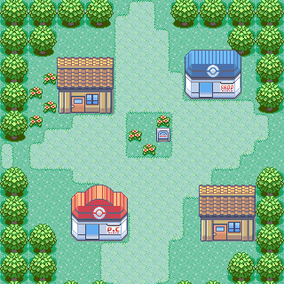
Oldale
Town
Uma cidade onde o contraste entre flores coloridas e florestas verdes e profundas é mais bonito
Local de interesse:
Primeiro Poké Mart
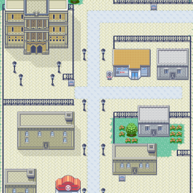
Rustboro
City
Esta cidade é o principal centro industrial da região de Hoenn, com a Devon Corporation como seu coração
Local de interesse:
Devon Corporation
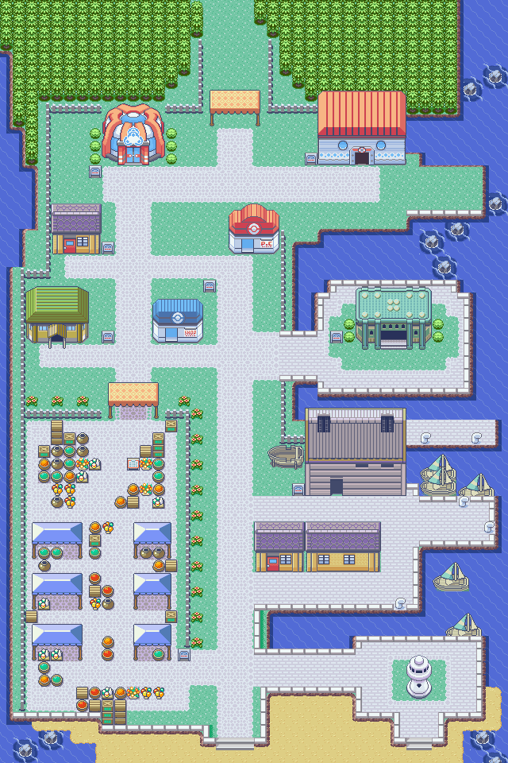
Slateport
City
Pessoas de diferentes regiões se reúnem e se misturam nesta agitada cidade portuária
Local de interesse:
Mercado ao ar livre
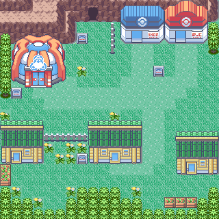
Verdanturf
Town
Graças ao padrão de vento predominante, esta cidade é sempre mantida livre de cinzas vulcânicas em queda
Local de interesse:
Tenda de Batalha
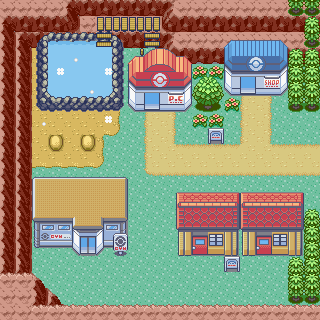
Lavaridge
Town
Um local popular na região de Hoenn, graças às suas fontes termais, que dizem curar qualquer doença
Local de interesse:
Fontes termais
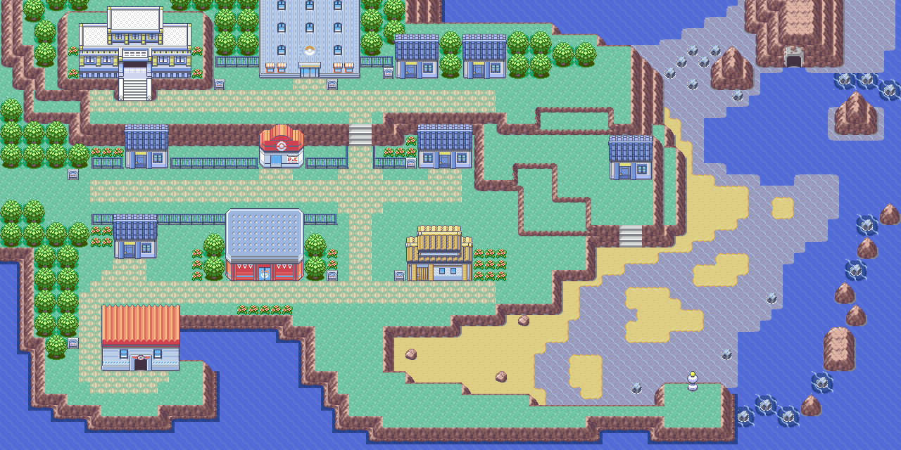
Lilycove
City
Este destino turístico está passando por um renascimento, graças à popularidade de seus Pokémon Contest Spectaculars
Local de interesse:
Museu de arte
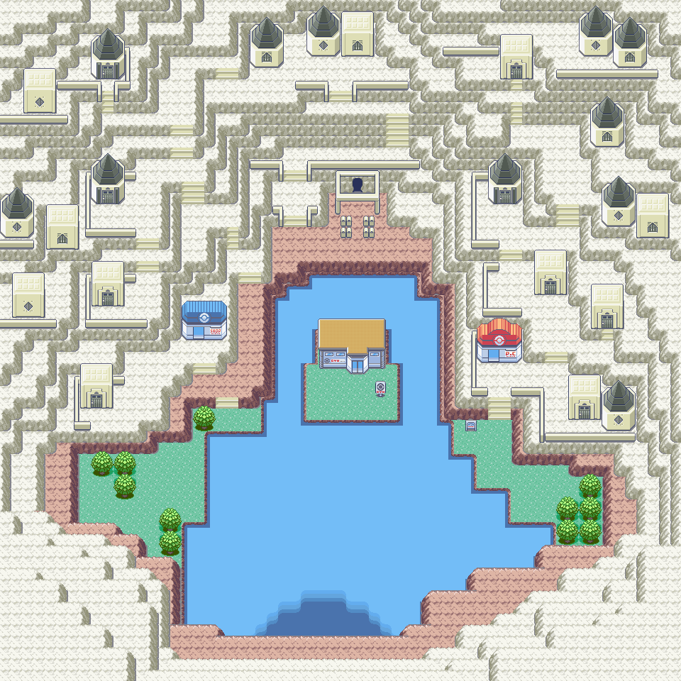
Sootopolis
City
Esta cidade, que surge da cratera da queda de um grande meteoróide, só pode ser alcançada através do mar ou do céu
Local de interesse:
Caverna da origem
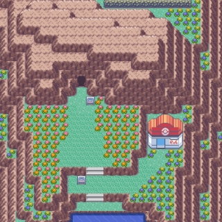
Ever Grande
City
Esta cidade é coberta por uma profusão de flores coloridas. Além disso, acolhe a grande Liga Pokémon
Local de interesse:
Victory road